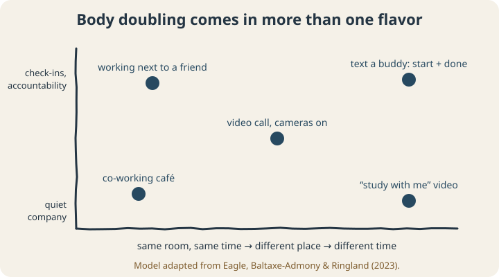
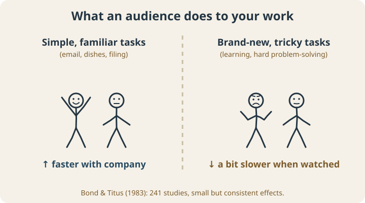

September 23, 2026
Body Doubling: Why Working Next to Someone Makes ADHD Tasks Easier

Here’s a strange thing a lot of people with ADHD discover by accident. The laundry you’ve been avoiding for a week gets folded in twenty minutes if a friend is sitting on your couch. The report you couldn’t start at home gets written at a coffee shop full of strangers who have no idea you exist.
Nobody helped you. Nobody even talked to you. They were just there.
This has a name, body doubling, and it’s one of the most talked-about ADHD strategies on the internet. So what is it, why would it work, and what does the research actually say?
What body doubling is
Body doubling means doing a task while another person is present. They might be working on their own thing, they might be on a video call, or they might just be in the room. The other person usually doesn’t help with your task at all. Their job is to exist nearby.
It sounds too simple to matter. Plenty of people swear by it anyway.
It comes in more than one flavor
Researchers who interviewed neurodivergent people about body doubling found that people use it in lots of different ways. They proposed mapping it along two lines: how close the other person is in space and time, and how much the two of you actually interact.1

At one end is ambient company: a coffee shop, a library, a “study with me” video on YouTube. Nobody is watching you, but you’re not alone. At the other end is active accountability: a friend you text “starting now” and “done” to, or a scheduled video session where you each say what you’re working on. Many people report that they found body doubling on their own and only learned the name later.2
Why would this work?
Nobody has fully pinned down the mechanism for ADHD specifically. There’s a popular explanation involving dopamine, but it hasn’t been directly tested for body doubling. What we do have is decades of research on a related effect.
Psychologists have studied social facilitation, meaning how the mere presence of other people changes performance, since the late 1800s. When researchers pooled 241 studies with nearly 24,000 participants, they found a consistent pattern:3

- With other people around, simple, familiar tasks got faster.
- Complex, unfamiliar tasks got a little slower, and accuracy on them dipped.
The effects were small, but consistent, and they suggest how to use body doubling well.
A lot of what people with ADHD avoid is simple but boring: laundry, email, expense reports, dishes, filing. Those are exactly the tasks company seems to help with. Brand-new, mentally demanding work (learning something hard, solving a tricky problem) may go better with quieter company, or alone.
Body doubling probably helps in a few other ways too. A second person makes it harder to drift into your phone unnoticed. Saying out loud “I’m doing my taxes for the next hour” is a small commitment. And a shared start time takes care of the hardest part of many tasks, which is beginning. (We wrote about that in our post on ADHD paralysis.)
How to try it
Match the flavor to the task
- Boring, simple tasks (admin, chores, email): go for more company. A friend on the couch, a busy café, a video call.
- Hard, focused work (writing, studying something new): try quieter company. A library, a silent co-working session, a “study with me” video with the sound down.
- Tasks you keep not starting: the text-a-buddy version. “Starting the budget now.” Then, later: “Done.”
Set it up in advance
Decide the time, the place, and the task before you sit down. “Thursday at 7, video call with Sam, I’m doing the insurance forms.” Deciding in the moment is where ADHD plans tend to fall apart.
Say the task out loud
Tell your body double what you’re working on at the start, and what you finished at the end. It takes ten seconds and makes the session feel real.
Look at your environment too
Body doubling is one piece of a bigger picture. The rest of your environment (noise, clutter, where your phone lives, what’s visible from your desk) quietly shapes what you get done too.
So, does it work?
For a lot of people, yes, especially on the boring, simple tasks that pile up. The research on social facilitation gives a sensible reason to expect it to help there, and a caution for harder work. The ADHD-specific research is early and mostly based on interviews. It costs almost nothing to try, so try it this week on one task you’ve been avoiding, and see what happens.
If you want a broader look at whether your home, work, and digital setup are helping or getting in the way, the free ADHD-Friendly Environment Quiz walks through all of it and gives you specific changes to try.
Scope note: This article is educational. It isn’t a diagnosis, and coaching isn’t a substitute for medical or psychological care.
Sources
- Eagle, T., Baltaxe-Admony, L. B., & Ringland, K. E. (2023). Proposing body doubling as a continuum of space/time and mutuality: An investigation with neurodivergent participants. Proceedings of the 25th International ACM SIGACCESS Conference on Computers and Accessibility (ASSETS ’23). doi.org/10.1145/3597638.3614486
- Eagle, T., Baltaxe-Admony, L. B., & Ringland, K. E. (2024). “It was something I naturally found worked and heard about later”: An investigation of body doubling with neurodivergent participants. ACM Transactions on Accessible Computing, 17(3). doi.org/10.1145/3689648
- Bond, C. F., & Titus, L. J. (1983). Social facilitation: A meta-analysis of 241 studies. Psychological Bulletin, 94(2), 265–292. doi.org/10.1037/0033-2909.94.2.265